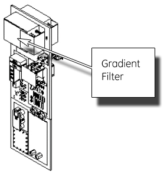
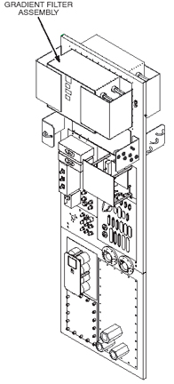
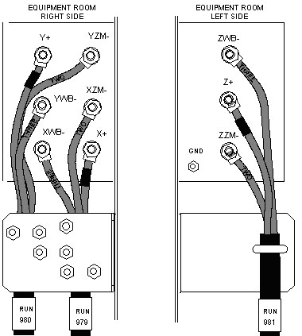
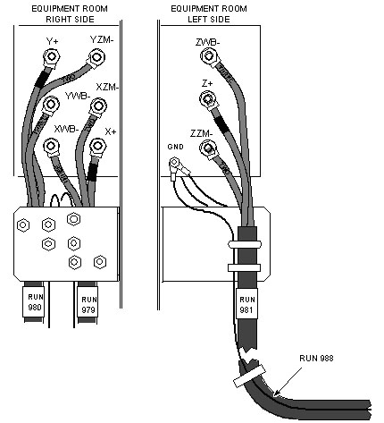
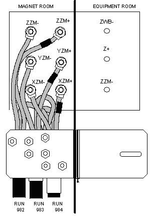
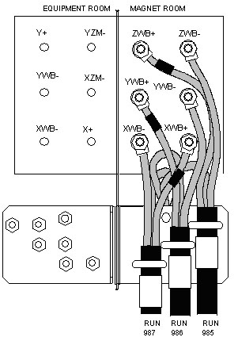
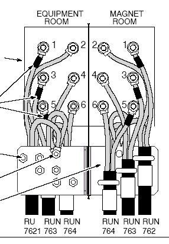

Operating Documentation
Direction 5133315-3, Rev# 14
Signa EXCITE HD 1.5T Service Methods
Module Version 2.0, Version Date 6/18/09
Operating Documentation |
| Required Persons | Preliminary Reqs | Procedure | Finalization |
|---|---|---|---|
| 2 | Not Applicable | 90 mins | Not Applicable |
Two people are required when removing and/or replacing the Gradient Filter Assembly. The gradient filter is a field-replaceable unit (FRU), so if it fails, the entire unit is replaced with the exception of the clear lug covers.
| Item | Qty | Effectivity | Part# | Manufacturer | |
|---|---|---|---|---|---|
| 200-1200 in/lb Torque Wrench with 3/8 in. Driver | 2 | - | 46-315668P2 | - | |
| Digital Volt Meter (DVM) with Alligator Clip Leads | 1 | - | - | - | |
| ESD Grounding Strap | 1 | - | - | - | |
| Crescent Wrench for U Bolts | 1 | - | - | - | |
| Item | Qty | Effectivity | Part# | Manufacturer | |
|---|---|---|---|---|---|
| BRM Gradient Filter | 1 | - | 46-320232G1 | - | |
| TRM Gradient Filter | 1 | - | 2382273 | - | |
| ||||
| FATAL ELECTRIC SHOCK HAZARD! | ||||
| THE GRADIENT Amplifiers ACT AS CONSTANT LOAD SOURCES, AND WILL SEND maximum CURRENT TO ANY LOAD including any human who get across the outputs. | ||||
| TO PREVENT FATAL ELECTRIC SHOCK, ENSURE THAT POWER IS OFF TO the gradient subsystem before CONTINUING WITH THIS PROCEDURE. |
| ||||
| POSSIBLE PERSONAL INJURY AND/OR EQUIPMENT DAMAGE! | ||||
| THIS PROCEDURE MUST BE DONE FROM BOTH SIDES OF THE PEN PANEL. | ||||
| TWO PEOPLE ARE REQUIRED FOR THIS PROCEDURE. ONE PERSON MUST BE IN THE MAGNET ROOM TO HOLD THE FILTER AND KEEP IT FROM FALLING, WHILE THE OTHER PERSON WORKS IN THE EQUIPMENT ROOM. |
| Condition | Reference | Effectivity |
|---|---|---|
Two People are required for this procedure: One in the Magnet Room, and the other in the Equipment Room. | - | - |
Two wrenches are necessary when removing the cables from the Gradient input/output connectors on each side of the penetration panel; one wrench is used to prevent the post from turning, while the other to loosen the nut. If attempting to loosen the nut with only one wrench, the post itself could turn, and damage to the circuit board inside the Gradient Filter could occur.
Before proceeding, remove power from the gradient cabinet. (See Gradient Subsystem Lock Out Tag Out.)
Use proper ESD precautions, and locate the BRM Gradient Filter shown in Illustration 1.
Illustration 1: BRM Gradient Filter

Use proper ESD precautions, and locate the TRM Gradient Filter shown in Illustration 2.
Illustration 2: TRM Gradient Filter

Remove the plastic Gradient Filter terminal covers.
Record the locations, and remove the cables attached to the terminals.
While coordinating with the FE on the other side of the PEN Panel, remove the screws securing the Gradient Filter assembly to the PEN Panel.
One person performs the following steps on the Magnet Room side of the PEN Panel, while the second person performs them on the Equipment Room side of the PEN Panel. Install the replacement Gradient Filter assembly as follows:
While coordinating with the FE on the other side of the PEN Panel, secure the gradient filter assembly to the PEN Panel with the screws that were previously removed.
On the Equipment Room side:
Route the three X and the three Y terminals to the right side of the gradient filter, and the three Z terminals to the left side of the gradient filter.
Connect the +, ZM- cables (labeled TWO) and WB- cables (labeled THREE) to the terminals as marked on each side of Gradient Filter. (See Illustration 3.)
| NOTE: | Red tape indicates positive (+) wires. |
Illustration 3: TRM Gradient Filter Wiring

Align the cables to obtain maximum spacing from other cables and conductive metal objects.
Holding the screw body steady, tighten the nuts to a torque of 35 ft-lb (67-74 Nm) and verify that nothing is loose.
Do a final check by hand to make sure screw is fixed, nut is tight, and the cable is secured to the terminal.
Connect the three Run 988 ground wires to the GND on the left side of the Gradient Filter.
Illustration 4: Attaching Ground Wires - TRM Gradient Filter

On the Magnet Room side:
Connect the six ZM- and ZM+ wires to the right side of the gradient filter terminals as marked. (See Illustration 5.)
| NOTE: | Red tape indicates positive (+) wires. |
Illustration 5: Connecting ZM Cables to PEN Panel

Connect the six WB- and WB+ wires to the left side of the gradient filter terminals as marked. (See Illustration 6.)
| NOTE: | Red tape indicates positive (+) wires. |
Illustration 6: Connecting WB Cables to PEN Panel

Align the cables to obtain maximum spacing from the other cables and conductive metal objects.
Holding the screw body steady, tighten the nuts to a torque of 35 ft-lb (67-74 Nm) and verify that nothing is loose.
Do a final check by hand to make sure screw is fixed, nut is tight, and the cable is secured to the terminal.
Secure the GND lead wire to each ground stud, located on the Strain-Relief Bracket, for each cable run.
Route and secure each cable run to the Strain-Relief Bracket with U bolts. Tighten enough to apply friction to the cable, but avoid crimping the insulation.
| NOTE: | Do not overtighten the strain relief, or damage could result to the cables. |
For systems with BRM filter terminals on one side only:
Connect wires to gradient filter terminals as shown in Illustration 7.
Illustration 7: Connecting Wires - BRM Gradient Filter

Align terminals to obtain maximum spacing form the other terminals and conductive metal objects.
Tighten nuts with torque wrench to 35 ft-lb (67-74 Nm).
| NOTE: | Red tape indicates positive (+) wires: Nos. 1, 3, and 5. |
Secure the GND lead wire to each ground stud, located on the Strain-Relief Bracket, for each cable run.
Repeat the above steps to connect the cables to the Gradient Filter on the other side of the PEN Panel.
Replace the plastic gradient filter terminal covers.
Remove LOTO from the Gradient Cabinet.
Perform Geometry Verification.